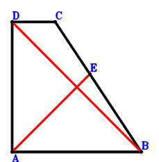
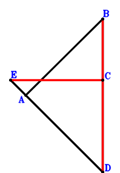

Exercise 6： Let DABC be a trapezoid with AB//DC and AB=3DC. C, E, B are collinear and 2EB=3CE. AB=DA. Prove that AE⊥DB.

\(\because \) AB//DC and AB=3DC \(\therefore \small\overrightarrow{BC}=- \dfrac{\small\overrightarrow{BA}}{3} + \small\overrightarrow{BD}\).\(\because \) C, E, B are collinear and 2EB=3CE \(\therefore \small\overrightarrow{BE}=\dfrac{3 \small\overrightarrow{BC}}{5}=- \dfrac{\small\overrightarrow{BA}}{5} + \dfrac{3 \small\overrightarrow{BD}}{5}\).\(\because \) AB=DA \( \therefore\small\overrightarrow{BA}^{2} - \small\overrightarrow{DA}^{2}=\small\overrightarrow{BA}^{2} - \left(\small\overrightarrow{BA} - \small\overrightarrow{BD}\right)^{2}=2 \small\overrightarrow{BA} \cdot \small\overrightarrow{BD} - \small\overrightarrow{BD}^{2}=0.\)In conclusion, \(\small\overrightarrow{DB} \cdot \small\overrightarrow{EA}=- \small\overrightarrow{BD} \cdot \left(\small\overrightarrow{BA} - \small\overrightarrow{BE}\right)=- \small\overrightarrow{BD} \cdot \left(\dfrac{6 \small\overrightarrow{BA}}{5} - \dfrac{3 \small\overrightarrow{BD}}{5}\right)=- \dfrac{6 \small\overrightarrow{BA} \cdot \small\overrightarrow{BD}}{5} + \dfrac{3 \small\overrightarrow{BD}^{2}}{5}=0\), that is, AE⊥DB.
Exercise 7： Let E, A, D be collinear and ED=6EA. B, C, D are collinear and 2CD=3BC. AB=AD. Prove that EC⊥BD.

\(\because \) B, C, D are collinear and 2CD=3BC \(\therefore \small\overrightarrow{DC}=\dfrac{3 \small\overrightarrow{DB}}{5}\).\(\because \) E, A, D are collinear and ED=6EA \(\therefore \small\overrightarrow{DE}=\dfrac{6 \small\overrightarrow{DA}}{5}\).\(\because \) AB=AD \( \therefore\small\overrightarrow{BA}^{2} - \small\overrightarrow{DA}^{2}=- \small\overrightarrow{DA}^{2} + \left(\small\overrightarrow{DA} - \small\overrightarrow{DB}\right)^{2}=- 2 \small\overrightarrow{DA} \cdot \small\overrightarrow{DB} + \small\overrightarrow{DB}^{2}=0.\)In conclusion, \(\small\overrightarrow{CE} \cdot \small\overrightarrow{DB}=\small\overrightarrow{DB} \cdot \left(- \small\overrightarrow{DC} + \small\overrightarrow{DE}\right)=\small\overrightarrow{DB} \cdot \left(\dfrac{6 \small\overrightarrow{DA}}{5} - \dfrac{3 \small\overrightarrow{DB}}{5}\right)=\dfrac{6 \small\overrightarrow{DA} \cdot \small\overrightarrow{DB}}{5} - \dfrac{3 \small\overrightarrow{DB}^{2}}{5}=0\), that is, EC⊥BD.